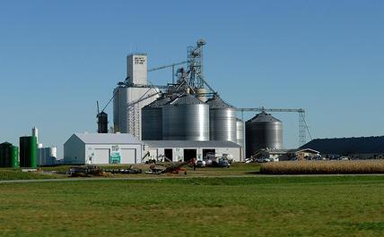

photo / freddthompson  Ethanol plant
Ethanol plant
Ethanol plant Two University of Texas scientists, Professor R. Malcolm Brown, Jr. and research associate Dr. David Nobles, Jr., have developed a cyanobacteria that secretes the sugars cellulose, glucose, and sucrose. These sugars’ fermentation is the major source of the alternative biofuel ethanol. The cyanobacteria could solve many of the problems surrounding ethanol production and could become a highly viable option for renewable energy.


Recent comments